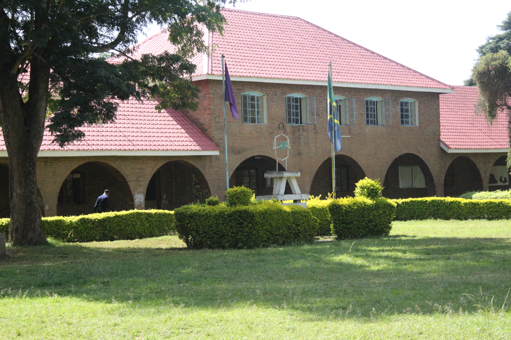
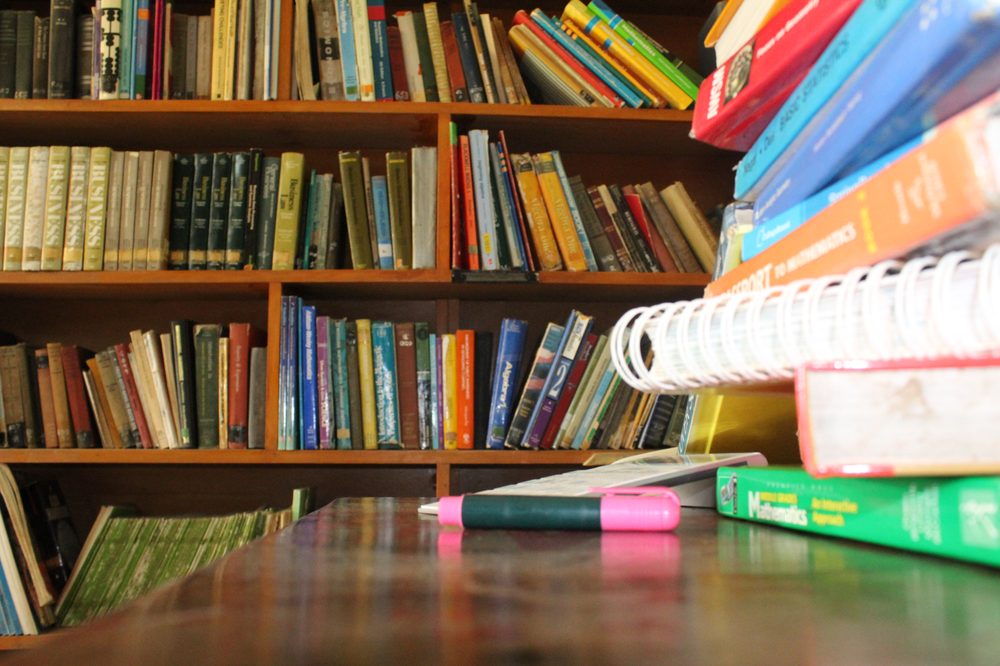

Administration block

Front block

Library
Programs
Apply
Ilboru secondary school is very wild, it has high number of teachers in all subjects including Science, Arts. Social and Sports subjects
,there are around 100 staff members with 80 teachers, 11 watchmen, 6 chefs and 3 student gurdians.
Ilboru secondary school has about nine hundred students in both levels from form one to form six in all subjects with
about six hunderd in ordinary level and three hundred in advanced level(high level)
Ilboru secondary schools carries a glorious purpose to the Ilboru community to the outside community till to the national level. The vision of the Ilboru secondary school is to build the innovative society through the high talented students who are gifted with the ability to think and to come up with new idea which will help them and the nation to develop and support the quality of citizens of Tanzania.
ILBORU SECONDARY SCHOOL
Arumeru, Arusha city, Tanzania
2022 Ilboru secondary
All rights reserved